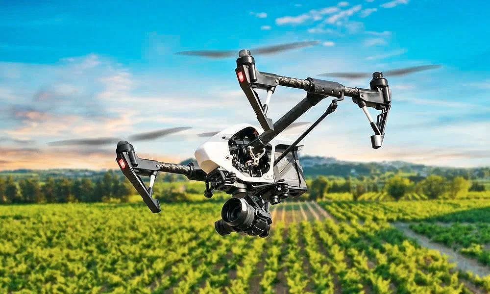
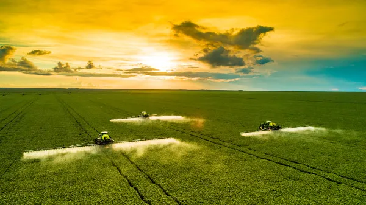
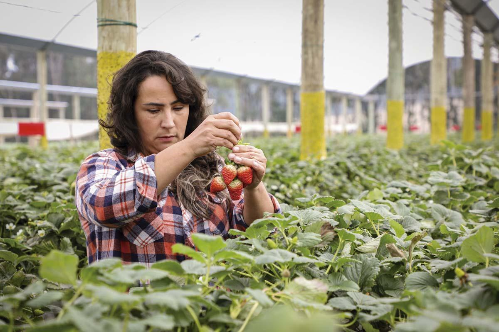
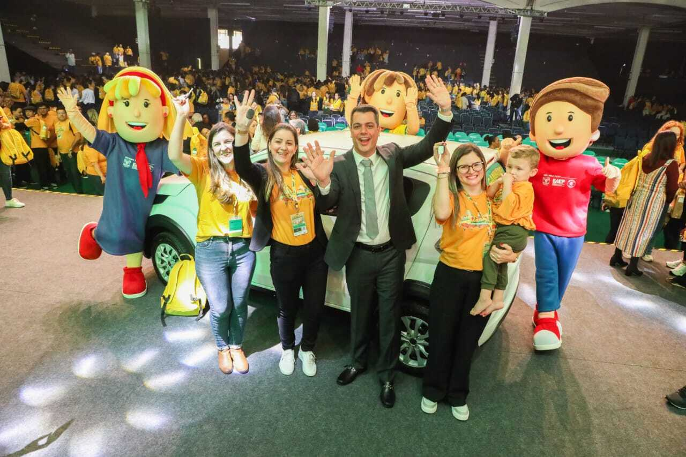

A urbanização crescente tem causado um impacto significativo nas comunidades rurais, trazendo tanto desafios quanto novas oportunidades. Com o avanço das cidades, as áreas do campo passam por transformações que afetam a forma de vida tradicional, mas também abrem espaço para o desenvolvimento econômico e social. Essa dinâmica exige um equilíbrio cuidadoso entre preservar as raízes do campo e integrar as inovações urbanas, garantindo que tanto o meio rural quanto o urbano possam crescer de maneira sustentável e harmoniosa.

Tecnologia no campo: Inovação transforma a agricultura
O uso de drones e inteligência artificial está revolucionando a produção agrícola, aumentando a produtividade e a sustentabilidade.
Novas políticas públicas para desenvolvimento rural
Incentivos governamentais estão fortalecendo pequenas propriedades rurais e melhorando a infraestrutura local para melhorar a qualidade de vida.

Projetos como o "Conexão Campo Cidade", promovido pelo Notícias Agrícolas, têm como objetivo integrar as cadeias produtivas e melhorar a comunicação entre produtores rurais e consumidores urbanos. Essas iniciativas ajudam a desmistificar a produção no campo e incentivam o consumo consciente de alimentos, fortalecendo a imagem do agronegócio brasileiro.

Apesar dos desafios, tenho percebido um movimento crescente de famílias urbanas retornando ao campo em busca de melhor qualidade de vida e novas oportunidades econômicas. Exemplos interessantes são a produção de morangos em Renascença (PR) e a fabricação de cachaça artesanal em Nova Prata do Iguaçu (PR), que além de gerar empregos, valorizam a agricultura sustentável.

Em 2024, o programa Agrinho premiou 2.600 estudantes do Paraná, incentivando a integração entre educação e agricultura. Os projetos vencedores abordaram temas importantes como empreendedorismo, a cadeia produtiva do milho e alimentação saudável, ajudando a ampliar a compreensão sobre a relação entre o campo e a cidade.